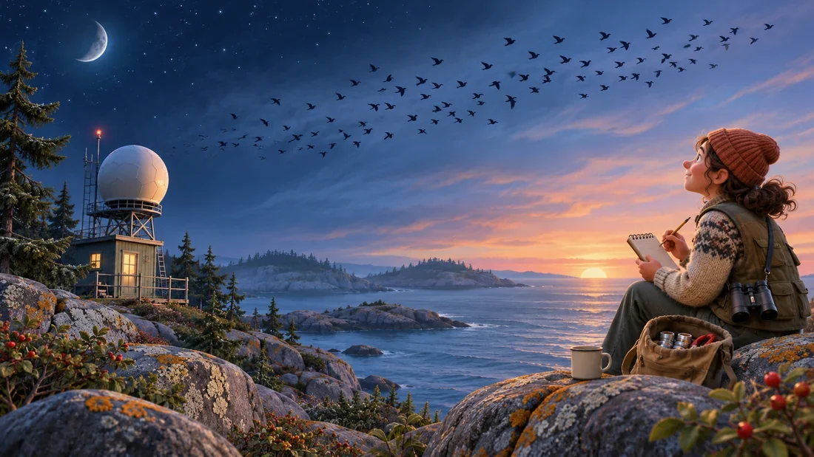
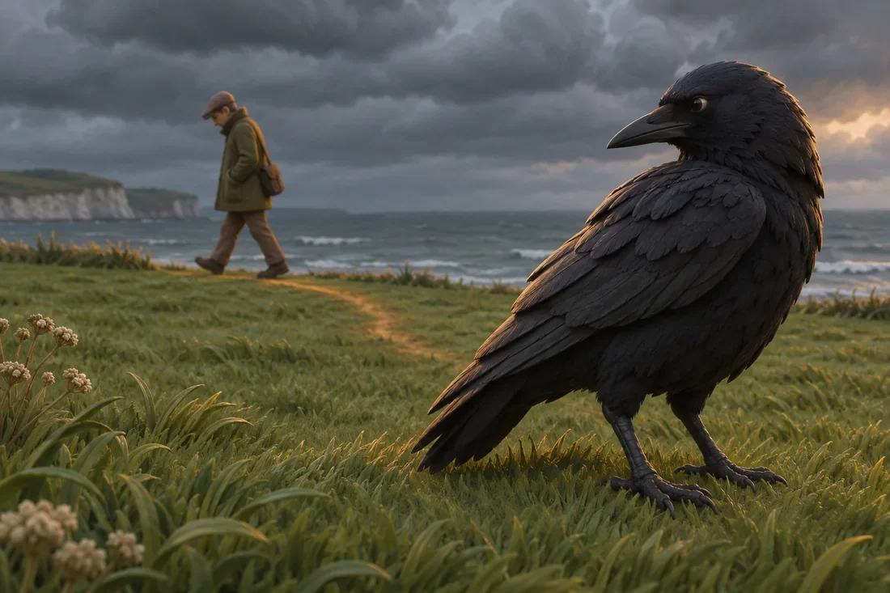
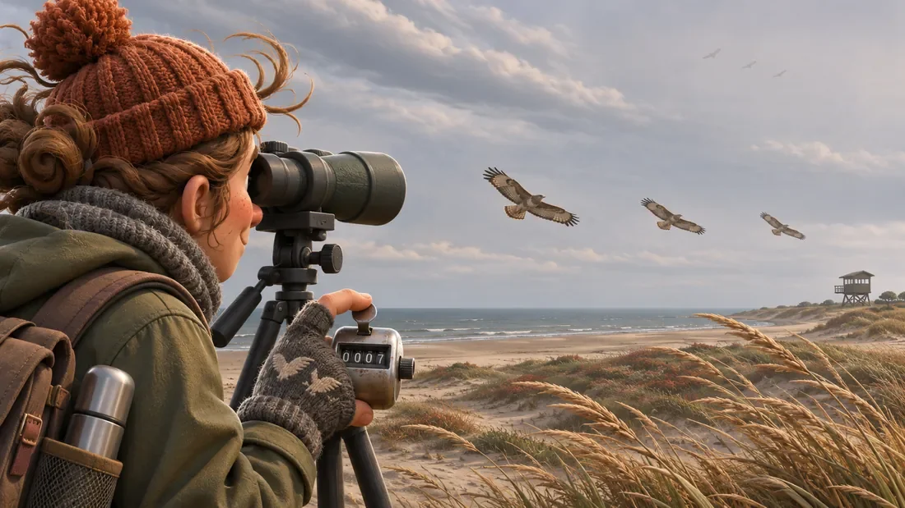
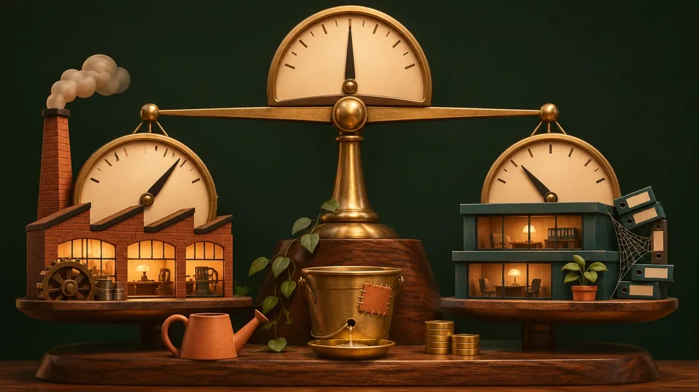

Att kunna granska ett AI-svar hör till det elever behöver lära sig
Daterad fördjupning.
Explorations · Löpande arkiv
Illustrerade nedslag i det som händer.
Senast publicerat19 inlägg
Daterad fördjupning.

Fördjupning.

Fördjupning. Bygger på svenska fältstudier från 2022 och 2024, inte på en ny händelse i dag.

Klockan 13.32 den 23 november berättade Karolinska Institutet om en svensk studie av Lewykroppsdemens. Alla 360 deltagare hade fått samma demensdiagnos. …

Kanarieöarna ligger utanför Afrikas kust och Franska Guyana ligger i Sydamerika, men båda är delar av EU. På måndagen ställde sig EU-ländernas ministrar …
Fördjupning om en studie publicerad den 15 november.

Daterad fördjupning. Studien publicerades den 13 november.

En övning för klassrummet, byggd på en studie publicerad den 20 november 2026.

Daterad fördjupning om forskningsmetod. Studien publicerades den 31 oktober 2026.
Daterad fördjupning.

Halvtimmen · 23 november 2026 kl. 08.30 · Fördjupning med anledning av hösträkningens ordinarie slutdatum den 20 november. Underlaget är äldre …

Klockan sju på måndagsmorgonen började perioden då ordinarie flyg till och från Brussels Airport skulle ställas in. Flygplatsens besked till resenärerna …

När den första uppgiften om november publicerades klockan 06.00 svensk tid såg Indiens samlade inköpschefsindex nästan stillastående ut: 56,3, mot 56,2 i …

När Associated Press publicerade sin marknadsrapport kl. 05.23 svensk tid jämförde nyhetsbyrån två marknader som gick åt olika håll. Sydkoreas breda …

När Australian Broadcasting Corporation uppdaterade sin direktrapport kl. 04.31 svensk tid hade den oberoende ledamoten Rebekha Sharkie ställt en fråga …

Klockan 03.40 svensk tid, medan måndagen just hade börjat här, inträffade ett jordskalv med magnitud 6,5 i Vanuaturegionen, enligt USGS. Den tidiga …

Klockan 22.00 på söndagen visade SVT2 den franska dokumentären PFAS – en global giftskandal. Det nya i kväll var sändningen, inte en ny upptäckt i …

När Agenda började kl. 21.15 fick kvällens bud i regeringsförhandlingarna sitt försvar i direktsändning. Mikael Damberg (S) sa att Socialdemokraterna, …

Antalyas klimatmöte hade redan stängt när Associated Press kl. 20.08 svensk tid samlade deltagarnas förklaringar till varför det inte blev något …